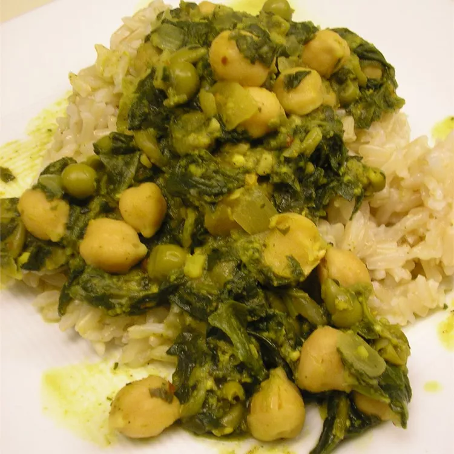

Chole Bathure

Ingredients
- 2 tablespoons vegetable oil
- 3 cloves garlic, minced
- 1 onion, chopped
- 1 teaspoon red pepper flakes
- 2 tablespoons curry powder
- 1 (15 ounce) can sweet peas, drained
- 1 (15.5 ounce) can garbanzo beans, drained
ordered list
- Step
Heat oil in a large saucepan over medium heat. Stir in garlic, onion, red pepper flakes, cumin, and curry powder, and cook until the onion has softened and turned translucent, about 5 minutes. Add the drained peas and mash well. Stir in garbanzo beans, spinach, yogurt, and chicken broth. Cook and stir until heated through, then season to taste with salt and pepper before serving.
- step
Finish